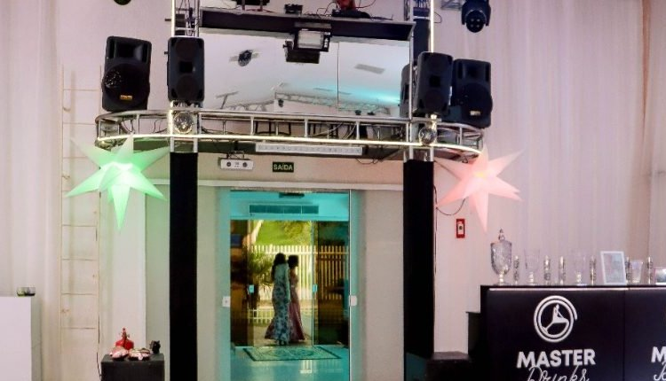
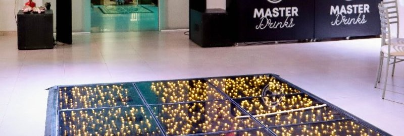
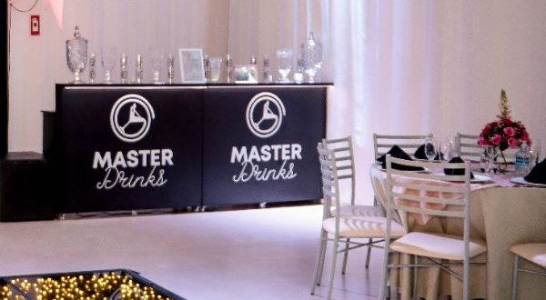

Tecnologia
Som e iluminação em LED profissional, TVs de LED, projetor de alta definição e gerador de luz em standby.
SALÃO DE EVENTOS CURITIBA CELEBRAÇÕES
Um espaço para casamento, 15 anos e formatura — com estrutura para você viver o momento e receber o carinho de seus convidados.
R. Mato Grosso, 22 — Campo Pequeno, Colombo/PR, região metropolitana de Curitiba.

A OCASIÃO
Escolha o tipo de celebração e fale direto com a equipe pelo WhatsApp.
 CasamentoPara dizer sim ao seu jeito ↗
CasamentoPara dizer sim ao seu jeito ↗
 15 AnosUma noite para celebrar ↗
15 AnosUma noite para celebrar ↗
 FormaturaUma conquista para reunir ↗
FormaturaUma conquista para reunir ↗
Imagens ilustrativas das ocasiões atendidas pelo espaço.
A ESTRUTURA
Uma leitura direta da estrutura e dos recursos apresentados pelo salão.
Som e iluminação em LED profissional, TVs de LED, projetor de alta definição e gerador de luz em standby.
Ambientes climatizados, hall de recepção, sala de atendimento e sala VIP da noiva ou debutante.
Banheiros adaptados para deficientes, fraldário anexo ao banheiro feminino e estacionamento.
O APOIO
A equipe publica suporte desde a ideia até a conclusão, contando com organizadores e gerentes dedicados.
Cenografia e ambientação para a data.
Trilha sonora para cada momento da festa.
Estrutura em LED profissional já disponível no espaço.
Serviço gastronômico para acompanhar a celebração.
Espaço dedicado para os convidados mais novos.
Vagas no local para os convidados.
Banheiros adaptados e fraldário para famílias.
Conforto térmico durante todo o evento.
UMA REFERÊNCIA
Três recortes da mesma galeria oficial, mostrando a estrutura do salão em detalhe.



O PRÓXIMO PASSO
Escolha o canal que preferir — telefone, WhatsApp ou redes sociais — e conte para a equipe qual é a sua data.